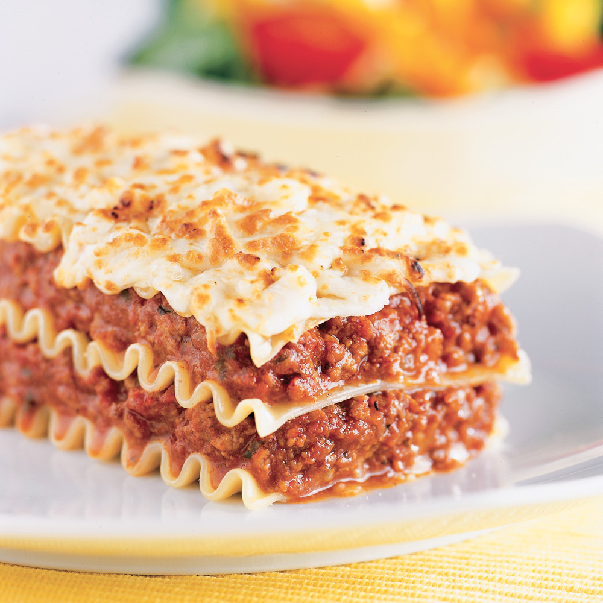

Lasagna
This classic Italian dish is made with layers of pasta, meat sauce, ricotta cheese, and mozzarella cheese. It's perfect for a special occasion.
Ingredients
- 1 pound lasagna noodles
- 1 pound ground beef
- 1 onion, chopped
- 2 cloves garlic, minced
- 1 (28 ounce) can crushed tomatoes
- 1 (15 ounce) can tomato sauce
- 1 (15 ounce) container ricotta cheese
- 1 (10 ounce) package shredded mozzarella cheese
- 1/2 cup grated Parmesan cheese
- 1/2 teaspoon Italian seasoning
- 1/4 teaspoon salt
- 1/4 teaspoon black pepper
Instructions
- Preheat oven to 375 degrees Fahrenheit.
- In a large skillet, brown the ground beef over medium heat.
- Add the onion and garlic to the skillet and cook until softened, about 5 minutes.
- Stir in the crushed tomatoes, tomato sauce, ricotta cheese, mozzarella cheese, Parmesan cheese, Italian seasoning, salt, and pepper.
- To assemble the lasagna, spread a thin layer of the meat sauce mixture in the bottom of a 9x13 inch baking dish.
- Top with a layer of lasagna noodles.
- Spread with another layer of the meat sauce mixture.
- Repeat layers until all of the ingredients are used.
- Cover the lasagna with foil and bake for 30 minutes.
- Remove the foil and bake for an additional 15 minutes, or until the top is golden brown and bubbly.
- Let the lasagna cool for 10 minutes before serving.
Enjoy!